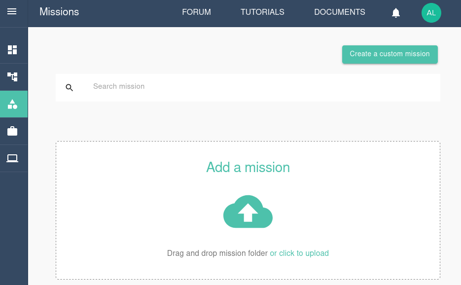
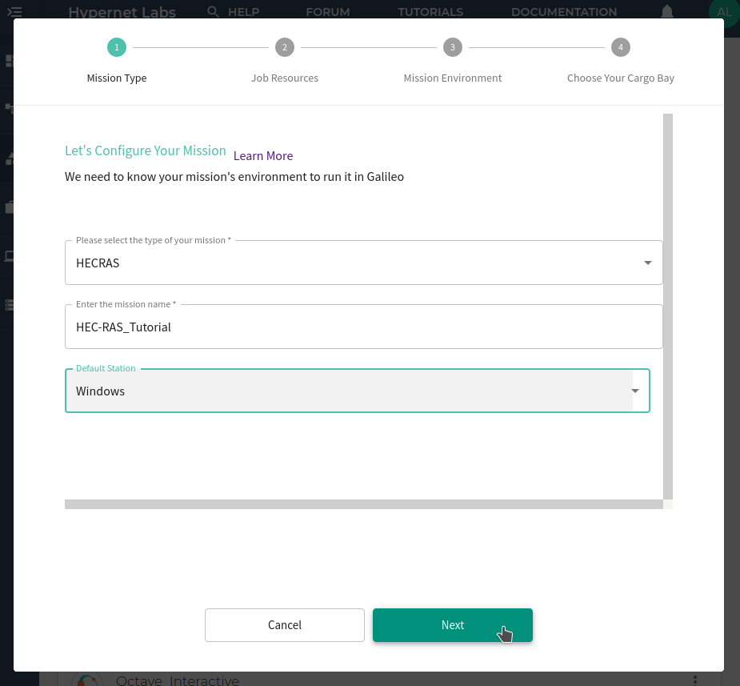
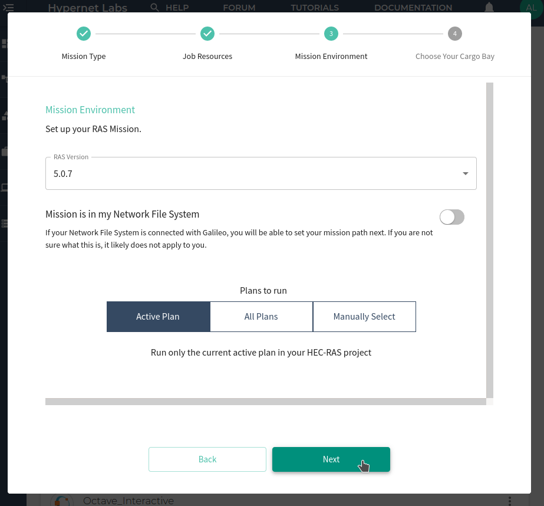
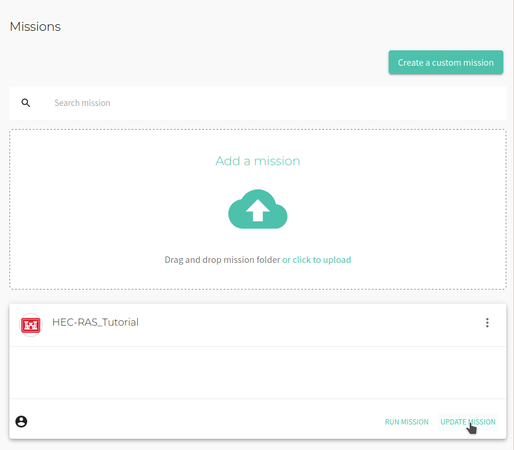
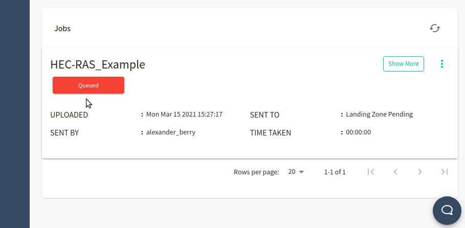
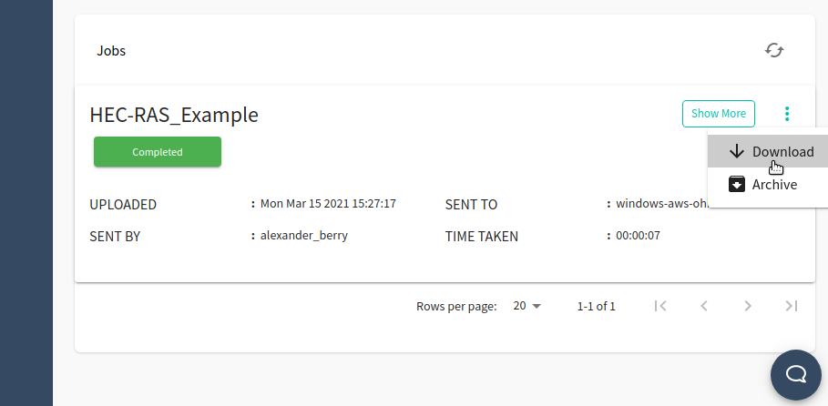

Tutorial: Running HEC-RAS in Galileo¶
Gettting started with HEC-RAS in Galileo¶
To get started with Galileo, log into your account using Firefox or Chrome and download our HEC-RAS example from GitHub.
Let’s take a look at our files¶
HEC-RAS is software that models the hydraulics of water flow through natural rivers and other channels. The HEC-RAS example in this tutorial is the standard 2D Muncie example that comes with the examples package of the HEC-RAS simulator.
Understanding the user interface and creating a Mission¶
When you log into Galileo, the first thing you’ll see is your Dashboard:

To run the HEC-RAS example, start by navigating to the Missions tab using the side menu. On the Missions tab, click the Creat a custom mission button.

Configure the mission by selecting the mission type. Choose HECRAS.
Next, give the mission a name and assign it to a default station to use. This tutorial will use the Windows station. Click Next.

Set the default amount of computational resources for the mission. Choose the CPU resources and memory resources. Click Next.

Create the mission environment by choosing a RAS version. You can optionally connect the Mission to your Network File System. You can also choose which plan to run on your HEC-RAS project. Click Next.

Finally, select the Cargo Bay you will use for this Mission. You can choose from the default Hypernet storage or an external storage provider. Galileo works seemlessly with cloud storage platforms such as Dropbox and Storj. Find out more about using these platforms here. Click Submit.
The Mission has now been created!
Running a job and collecting results¶
You will now see the new Mission reflected in the Mission tab. Click Update Mission to add and edit the Mission’s files.

Upload the Muncie example folder by clicking the Upload Folder button. You will see the files in the Mission interface.

Now we are ready to run a job using the Mission. Click the Run button in the upper right corner of the Mission tab. You will see a “Mission run successfully!” message. At the bottom of the Mission tab, you can track the progress of the job.

Once the computation is complete, the job will shut down and collect the results. Once the job progress reads “Completed”, you can download any files generated by the simulation by opening the three-dot menu again and clicking Download.

Contact us¶
We hope this tutorial was helpful. Please let us know if you have any questions or any problems using Galileo. Your feedback is extremely important to us. Contact us anytime at matthew@hypernetlabs.io or alexander@hypernetlabs.io.